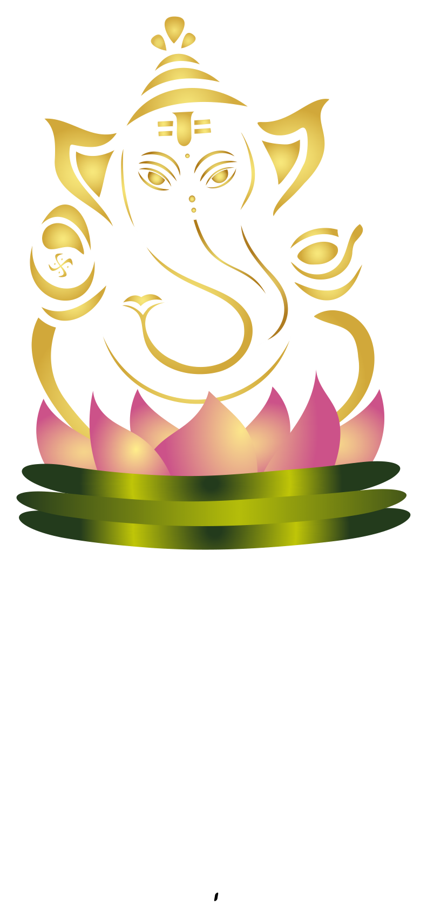

Student project · Selected exploration
A welcoming mascot
A Ganesha-inspired character on a lotus, exploring cultural identity, warmth, and inclusivity in Illustrator.

Culture, character, and craft
I explored a peacock, mango, and lotus before choosing a Ganesha-inspired mascot. Soft curves and an open posture express warmth; the lotus connects the character to growth. Working through the Pen Tool, gradients, and swatches helped me refine both the shape and its personality.